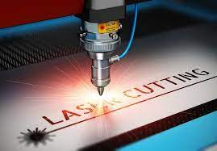
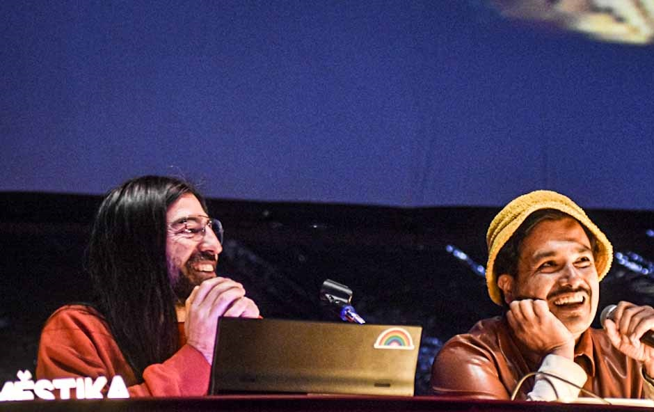
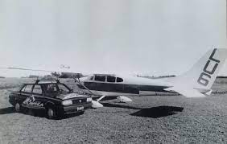

¿Cuales son las ventajas del grabado laser?

El grabado a láser es un proceso que vaporiza los
materiales en forma de rayos para grabar marcas
permanentes y profundas. El rayo láser actúa como
un cincel, grabando marcas al eliminar capas de la
superficie del material.
El grabado con láser es la técnica que utiliza
láseres para grabar un objeto. El láser que
marca, por otro lado, es una categoría más
amplia de métodos para dejar marcas en un objeto,
el cual también incluye cambio de color debido
a alteración/molecular química, espumando,
fundiendo, ablación, y más. La técnica no implica
el uso de tintas, ni puntas qué hacen contacto
con la superficie para poder grabar, dándole una
ventaja sobre grabado o tecnologías de marcando
donde tintas o puntas tienen que ser reemplazadas
regularmente.
El impacto del láser que marca ha sido más importante
en materiales "laserables" diseñados para usar un láser.
Estos incluyen polímeros sensibles al láser y aleaciones
de metal novel.
Ventajas
- Adecuado para muchos materiales (madera, vidrio, textiles, papel, metal, plásticos, etc.)
- El material no necesita ser sujetado. Procesamiento sin contacto.
- No hay desgaste de herramientas.
- Muy alta precisión.
- Económico para piezas individuales y series.
TRIMARCHI sale de gira

Trimarchi sale de gira y este año no se realizará en Mar del Plata
Después de haber celebrado dos décadas, en septiembre la convención de diseño se trasladará a España y en el 2024 pretende volver al Estadio Polideportivo.
Después de haber celebrado dos décadas en el Estadio Polideportivo, Trimarchi este año no se realizará en Mar del Plata. Sus organizadores apostaron por salir de gira y realizar la convención de diseño en septiembre en Madrid, España. “Este 2023 cruzamos el Atlántico con el evento, y el 2024 volvemos a copar ese estadio con la pandilla nerd más prendida de la zona”, anunciaron desde la organización.
En el cierre del año pasado los organizaciones habían deslizado la posibilidad de que este 2023 el evento se realizara en otra parte del mundo para compartir sus inquietudes con otras comunidades. Ahora, a través de un posteo en sus redes sociales confirmaron que, por primera vez, Trimarchi se realizará el 30 de septiembre en Madrid, España.
El avión de los carteles en la playa

Un avión irrumpe sobre la panorámica de la playa en pleno verano. Bajo el sol, miles de personas oyen el rugido del motor, alzan la mirada al cielo y descubren a uno de los aviones que sobrevuelan la costa de Mar del Plata y llevan los tradicionales carteles publicitarios. La imagen es una postal impregnada en el imaginario colectivo, pero en realidad es el resultado final de un duro y caluroso trabajo en tierra y aire que se repite hace 50 años gracias al éxito de una publicidad no tradicional que todos ven, aunque pocos conocen cómo se vive desde adentro.